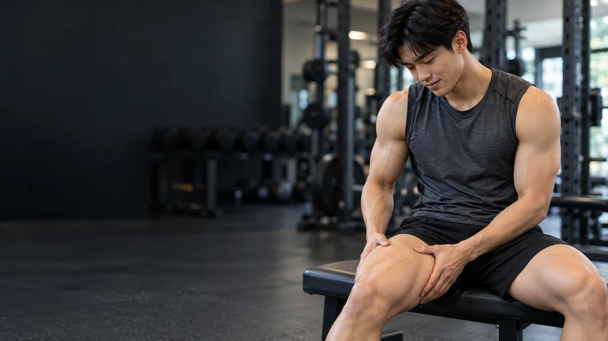
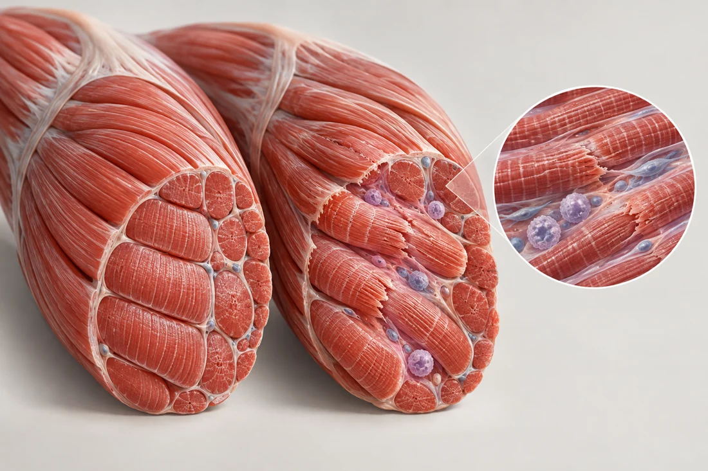

중학교 체육 · 운동과 건강
근육통은 왜
다음 날 올까?
운동은 어제 끝났는데
계단은 오늘 왜 이렇게 힘들까?
지연성 근육통 · DOMS 알아보기

운동은 어제 끝났는데
계단은 오늘 왜 이렇게 힘들까?
운동하는 동안은 괜찮았는데
아침에 일어나니 허벅지가 뻐근하다.
익숙하지 않은 운동 뒤, 시간이 지나 나타나는
뻐근함·압통·움직임 불편감
운동 직후 바로 나타나는 통증과 구별해요.
개인과 운동에 따라 시간·강도는 달라요.
보통 며칠 안에 좋아지지만, 개인차가 있어요.
힘듦·피로가 생길 수 있지만, 날카로운 통증은 멈춰서 확인
겉으로 괜찮아도 근육 안의 반응은 계속될 수 있음
뻐근함이나 누를 때 아픈 느낌이 시작될 수 있음
불편감이 더 커질 수 있고, 이후 점차 완화되는 경향
연구에서도 통증의 정점은 운동 종류와 측정 시점에 따라 다르게 보고됩니다.
예: 스쿼트에서 일어서기, 팔굽혀펴기에서 밀어 올리기
단축성 수축 (concentric)
예: 스쿼트로 천천히 내려가기, 계단 내려가기, 착지하며 속도 줄이기
신장성 수축 (eccentric)
힘을 내는 동안 근육 길이가 길어짐
= 신장성 수축
계단 내려가기 / 착지 / 스쿼트 하강

근육 미세손상·염증 반응·신경의 민감화 등이 관여하는 복합 현상으로 이해하는 것이 현재의 신중한 설명입니다.
젖산(더 정확히는 운동 중 증가하는 젖산염)은 운동 뒤 비교적 빠르게 처리돼요. 다음 날 느끼는 지연성 근육통을 젖산이 그대로 남아 만든다고 볼 수 없습니다.
운동 강도가 높을 때 숨이 차고 타는 듯한 느낌이 날 수 있어요.
시간차를 두고 나타나는 뻐근함. 주된 설명은 젖산 축적이 아닙니다.
몸 상태가 허락하는 범위에서. 아픔을 참으며 강행하지 않기.
회복에 필요한 기본을 챙기고, 특정 음식·보충제의 효과를 과장하지 않기.
움직임이 크게 불편하면 같은 근육을 고강도로 몰아붙이지 않기.
통증 점수 하나보다 움직임과 몸 상태를 함께 살펴요.
준비운동 후 움직임이 편하고 통증이 악화되지 않는지 확인. 부담이 큰 동작은 줄이기.
해당 근육의 강한 운동은 쉬거나 다른 활동으로 바꾸고, 상태를 다시 확인하기.
운동을 멈추고 교사·보호자에게 알리기. 필요하면 의료 전문가의 평가 받기.
개인별 건강 상태와 통증 원인은 다르므로, 이 기준은 수업용 일반 안내입니다.
무릎이 굽혀지는 동안 허벅지 앞 근육은 길어지면서도 다리가 툭 떨어지지 않게 제어합니다.
관찰 결과는 사람마다 다를 수 있어요. 통증 유발이 목적이 아니라 움직임 원리를 알아보는 활동입니다.
평소보다 스쿼트를 많이 한 다음 날, 허벅지가 뻐근하다.
움직일 수는 있지만 계단을 내려갈 때 더 불편하다.
가장 알맞은 설명은?
운동 도중 종아리에 갑자기 날카로운 통증이 생겼고,
걷기도 힘들 만큼 아프다.
가장 먼저 할 행동은?
→ 키를 눌러 정답을 한 칸씩 확인하세요. 수업용 일반 정보이며 진단·치료를 대신하지 않습니다.